Sparse Linear Regression with Quadrupen
A tour of standard analysis (fit, cross-validation, information criteria, stability)
Source:vignettes/sparse-regression.Rmd
sparse-regression.RmdSetup
library(quadrupen)
#> 'quadrupen' package version 1.0-0
data("Birthwt", package = "grpreg")
y <- Birthwt$bwt[-130] ## outlier
X <- Birthwt$X[-130, ]The Birthwt dataset contains birth weight data with 189
observations and 16 predictors. We use it throughout this vignette to
illustrate sparse linear regression.
Fitting sparse linear models
The main entry point is sparse_lm(), which fits a
regularization path for several sparse penalties: "l1"
(Lasso/Elastic-net), "mcp" (Minimax Concave Penalty) and
"scad" (Smoothly Clipped Absolute Deviation). Convenience
wrappers lasso(), mcp(), scad()
and elastic_net() are also available.
Lasso
fit_lasso <- lasso(X, y, minratio = 1e-2)
fit_lasso
#> Linear regression with L1 penalizer.
#> - number of coefficients: 16 + intercept
#> - lambda regularization: 100 points from 2.78 to 0.0278
#> - gamma regularization: 0SCAD
SCAD is a non-convex penalty that matches the Lasso near the origin
and tapers to a constant for large coefficients, thereby eliminating
shrinkage bias for strong signals. The shape parameter eta
must be greater than 2.
fit_scad <- scad(X, y, eta = 4, minratio = 1e-2)
fit_scad
#> Linear regression with SCAD penalizer.
#> - number of coefficients: 16 + intercept
#> - lambda regularization: 100 points from 2.78 to 0.0278
#> - gamma regularization: 0MCP
MCP applies a linearly diminishing marginal penalty that vanishes
once a coefficient exceeds eta × lambda1, yielding
near-unbiased estimates for large signals. The shape parameter
eta must be greater than 1.
fit_mcp <- mcp(X, y, eta = 3, minratio = 1e-2)
fit_mcp
#> Linear regression with MCP penalizer.
#> - number of coefficients: 16 + intercept
#> - lambda regularization: 100 points from 2.78 to 0.0278
#> - gamma regularization: 0Elastic-Net
The Elastic-net combines an \(\ell_1\) and an \(\ell_2\) penalty, trading off sparsity
against grouping of correlated predictors. The lambda2
argument controls the ridge component.
fit_enet <- elastic_net(X, y, lambda2 = 1, minratio = 1e-2)
fit_enet
#> Linear regression with L1 plus L2-regularization penalizer.
#> - number of coefficients: 16 + intercept
#> - lambda regularization: 100 points from 2.78 to 0.0278
#> - gamma regularization: 1Fit objects
All objects returned by sparse_lm() and its wrappers are
R6 instances of the class SparseFit, inheriting from
QuadrupenFit. These objects (see
[QuadrupenFit]) store all data related to the fit,
accessible directly via named fields (e.g.,
fit_lasso$coefficients, fit_lasso$deviance,
fit_lasso$degrees_freedom; see str(fit_lasso)
and the documentation).
They also provide methods for visualizing and analyzing the fit, and
for pursuing complementary analyses such as model selection,
cross-validation, and stability selection. For users unfamiliar with R6
classes, S3 methods are exported for the most common operations (e.g.,
plot(fit_lasso) is equivalent to
fit_lasso$plot()), but the R6 methods expose more
options.
Regularization paths
$plot_path() (or plot(fit, type = "path"))
displays how coefficients evolve along the penalty path.
fit_lasso$plot_path(xvar="fraction", log_scale = FALSE)
fit_mcp$plot_path(labels = colnames(X))
fit_scad$plot_path()
fit_enet$plot_path(standardize=FALSE)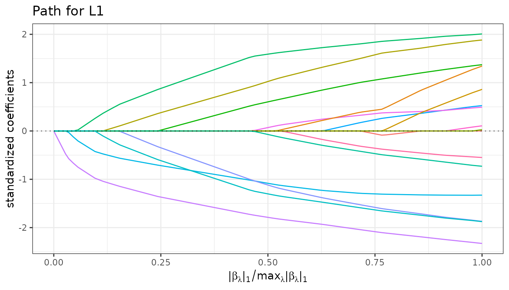
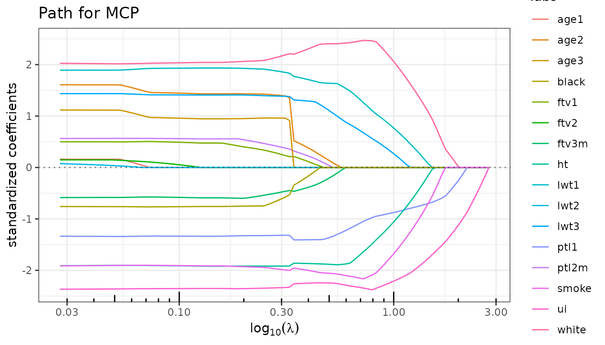
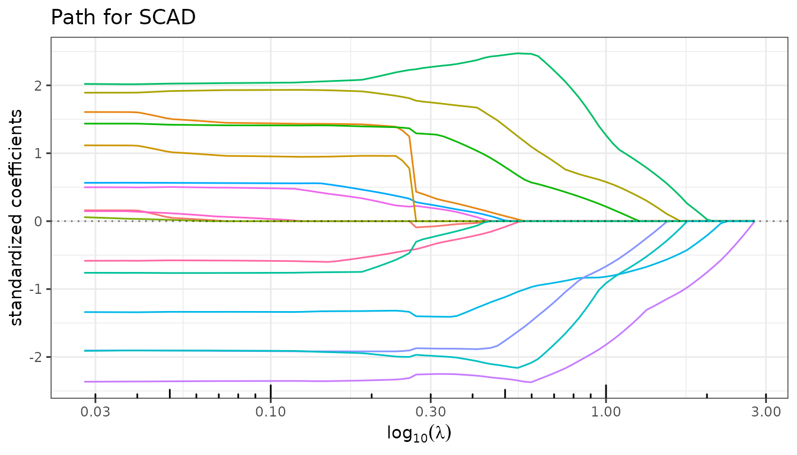
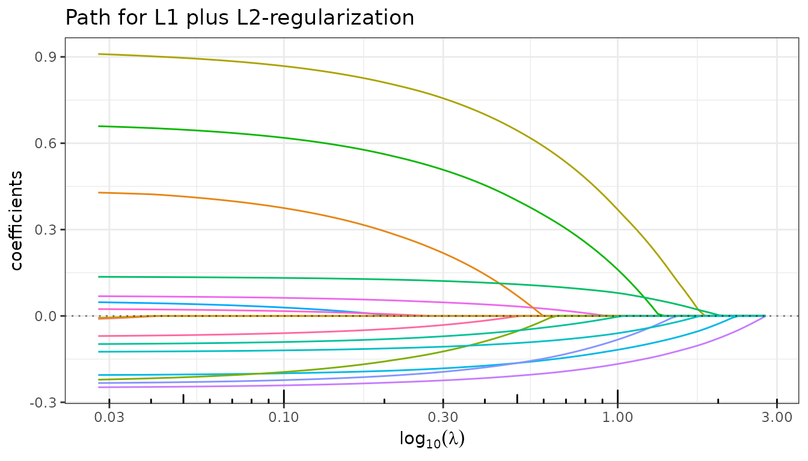
Information criteria
$criteria() computes AIC, BIC, mBIC, eBIC and GCV from
the estimated degrees of freedom, storing the result as an
[InformationCriteria] R6 object in the field
$information_criteria of the current fit. This method is
called automatically during fitting (sparse_lm() or any
wrapper) at no additional computational cost, so users rarely need to
invoke it manually — the main exception being when a custom penalty term
is desired.
fit_lasso$criteria()
fit_lasso$plot(type = "criteria")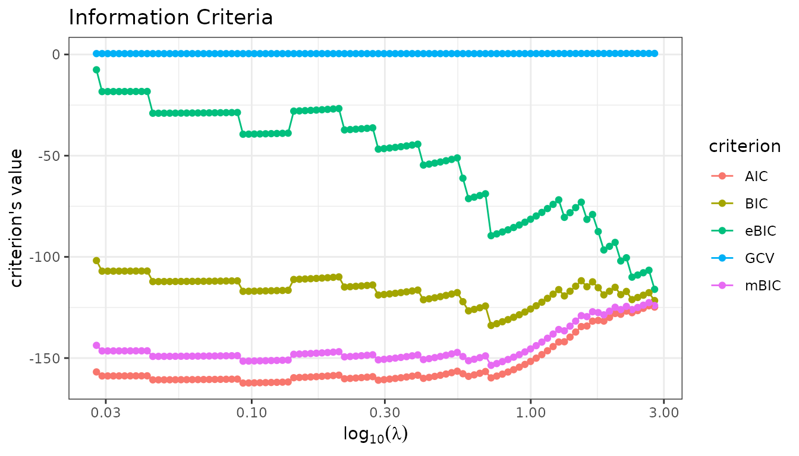
For greater flexibility, use the plot method of the
InformationCriteria object directly to select which
criteria to display:
fit_lasso$information_criteria$plot(c("AIC", "BIC", "mBIC"))
fit_mcp$information_criteria$plot("GCV")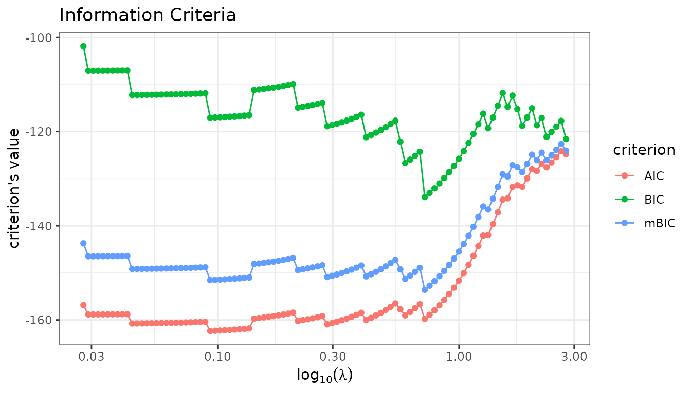
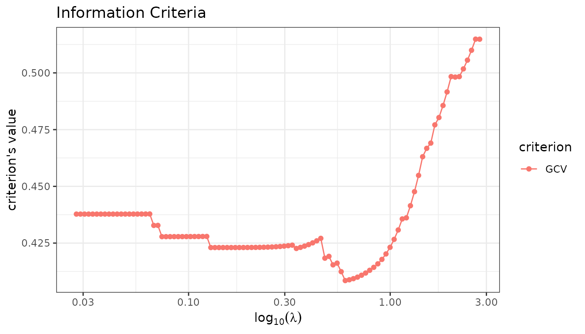
Model extraction
$get_model() extracts the coefficient vector selected by
a given criterion.
coef_lasso_bic <- fit_lasso$get_model("BIC")
coef_mcp_bic <- fit_mcp$get_model("BIC")
cat("Non-zero Lasso coefficients (BIC):\n")
#> Non-zero Lasso coefficients (BIC):
print(coef_lasso_bic[coef_lasso_bic != 0])
#> Intercept lwt1 lwt3 white smoke ptl1 ht
#> 2.9931326 0.9025747 0.5131904 0.2216380 -0.1817029 -0.2217365 -0.2969746
#> ui
#> -0.3530479
cat("\nNon-zero MCP coefficients (BIC):\n")
#>
#> Non-zero MCP coefficients (BIC):
print(coef_mcp_bic[coef_mcp_bic != 0])
#> Intercept lwt1 lwt3 white smoke ptl1 ht
#> 3.0186084 1.5356100 0.8812085 0.3530156 -0.3138259 -0.2674971 -0.5596069
#> ui
#> -0.4685982An existing lambda value can also be passed directly:
lambda_lasso <- fit_lasso$major_tuning
coef_lasso_lambda <- fit_lasso$get_model(lambda_lasso[18])
cat("Non-zero Lasso coefficients for lambda = ", round(lambda_lasso[18], 2), "\n")
#> Non-zero Lasso coefficients for lambda = 1.26
print(coef_lasso_lambda[coef_lasso_lambda != 0])
#> Intercept lwt1 lwt3 white smoke
#> 2.9725364689 0.3611176526 0.0005800756 0.1252915157 -0.0885736060
#> ptl1 ht ui
#> -0.1545302819 -0.0972542515 -0.2777916481Cross-validation
$cross_validate() performs K-fold cross-validation over
the penalty grid, storing the result as a [CrossValidation]
R6 object in the field $cross_validation of the current
fit.
set.seed(42)
fit_lasso$cross_validate(K = 10, verbose = FALSE)
fit_mcp$cross_validate(K = 10, verbose = FALSE)
fit_lasso$plot(type = "crossval")
fit_mcp$plot(type = "crossval")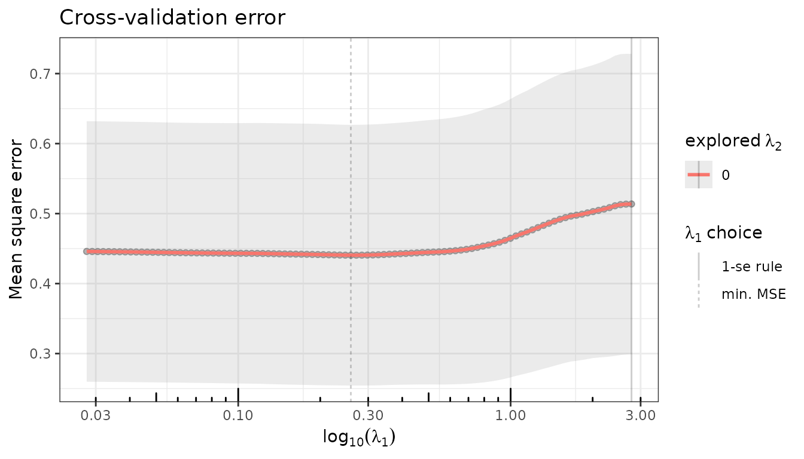
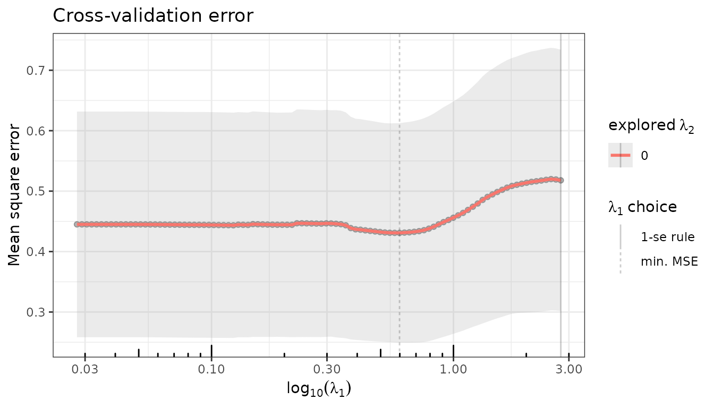
Model selection using the CV-minimizing penalty:
coef_lasso_cv <- fit_lasso$get_model("CV_min")
cat("Non-zero Lasso coefficients (CV min):\n")
#> Non-zero Lasso coefficients (CV min):
print(coef_lasso_cv[coef_lasso_cv != 0])
#> Intercept age1 age2 lwt1 lwt3 white
#> 3.02725378 -0.02641033 0.54176929 1.53325763 1.02742153 0.26518579
#> black smoke ptl1 ptl2m ht ui
#> -0.09330393 -0.24008374 -0.28310940 0.08271167 -0.46254426 -0.42205020
#> ftv1 ftv3m
#> 0.05758491 -0.09951214Cross-validation on \(\lambda_1 \times \lambda_2\)
For regularizers with two penalties (typically the Elastic-net), cross-validation can be run on a two-dimensional grid:
fit_enet$plot(type = "crossval")
fit_enet$cross_validation$plotCV_1D(se = FALSE) + ggplot2::ylim(c(0.4, 0.55))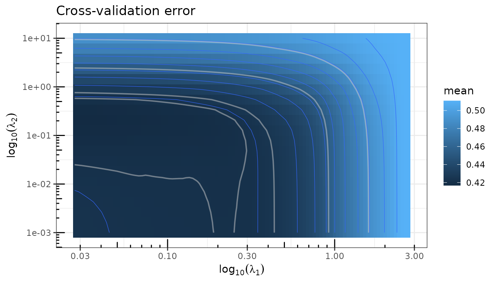
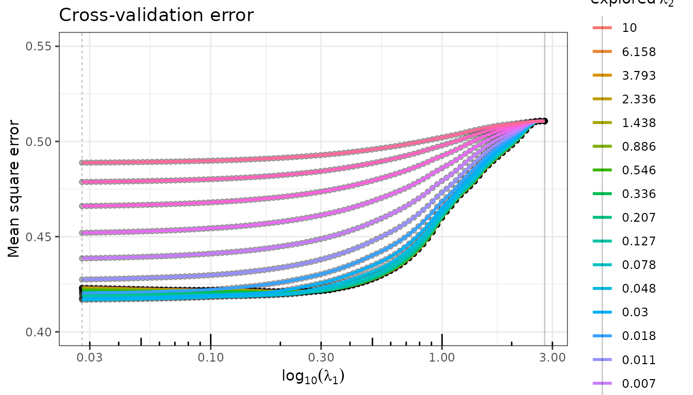
Prediction
$predict() returns fitted values for the whole path, or
for a specific model selected by a criterion or a lambda value.
## Predictions at the CV_min-selected model
y_hat_lasso <- fit_lasso$predict(selection = "CV_min")
y_hat_mcp <- fit_mcp$predict(selection = "CV_min")
y_hat_enet <- fit_enet$predict(selection = "CV_min")
## R² at the selected model
r2_lasso <- fit_lasso$r_squared[fit_lasso$get_model("CV_min", type = "index")]
r2_mcp <- fit_mcp$r_squared[fit_mcp$get_model("CV_min", type = "index")]
r2_enet <- fit_enet$r_squared[fit_enet$get_model("CV_min", type = "index")]
cat(sprintf("R² Lasso (CV_min): %.3f\nR² MCP (CV_min): %.3f\nR² Enet (CV_min): %.3f\n", r2_lasso, r2_mcp, r2_enet))
#> R² Lasso (CV_min): 0.276
#> R² MCP (CV_min): 0.265
#> R² Enet (CV_min): 0.218Stability selection
$stability() estimates selection probabilities via
repeated sub-sampling (Meinshausen & Bühlmann, 2010). Variables that
appear consistently across sub-samples receive high probabilities and
are considered robustly selected. The stability path is stored as a
[StabilityPath] R6 object in the field
$stability_path of the current fit.
set.seed(42)
fit_lasso$stability(n_subsamples = 200, verbose = FALSE)
fit_lasso$plot(type = "stability")
#> Warning: This manual palette can handle a maximum of 13 values. You have
#> supplied 16
#> Warning: Removed 300 rows containing missing values or values outside the scale range
#> (`geom_line()`).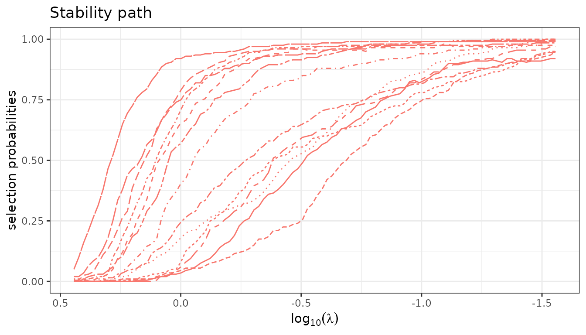
fit_lasso$stability_path$plot(nvarsel = 7)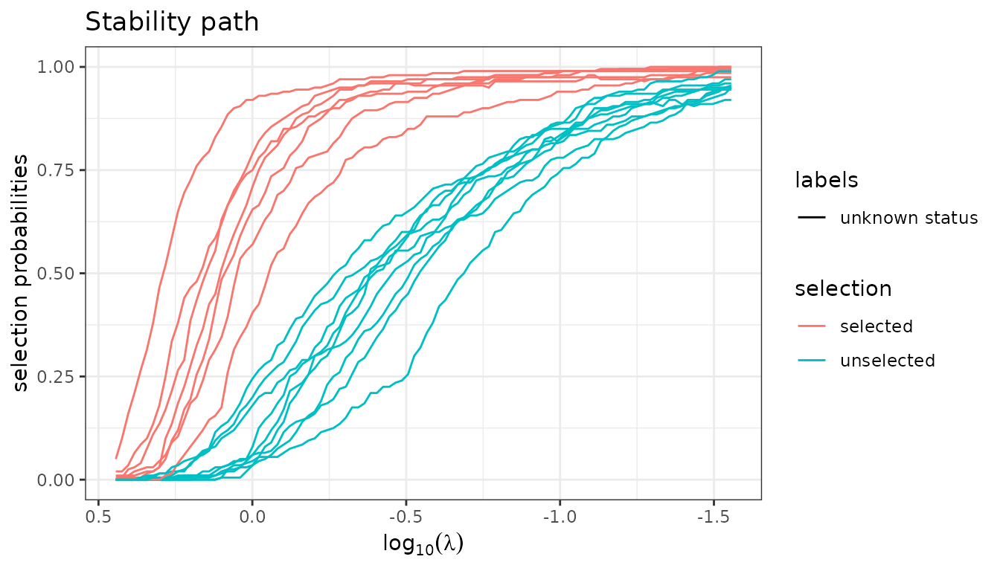
colnames(X)[fit_lasso$stability_path$selection(nvarsel = 7) ]
#> [1] "ui" "white" "ptl1" "smoke" "lwt1" "ht" "lwt3"Debiased Estimators
Every \(\ell_1\)-based regularizer
is known to be biased due to the shrinkage effect. A standard remedy is
to refit the model on the selected support without penalization. This is
implemented in quadrupen at no extra computational cost
— the refitted coefficients are computed alongside the regularization
path — and can be activated by setting the $debias field to
TRUE.
fit_lasso$debias <- TRUE
fit_lasso$plot_path()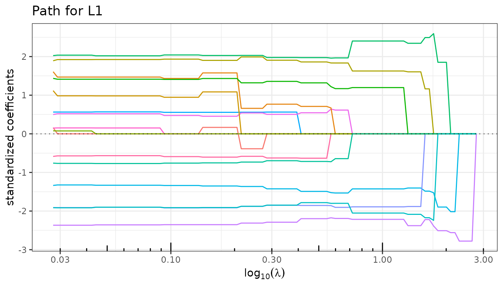
Since both versions are stored in the same object, it is
straightforward to compare the regularized and debiased solutions — for
the path as well as for CV error — by toggling $debias.
fit_lasso$cross_validate(verbose = FALSE)
fit_lasso$plot(type = "crossval")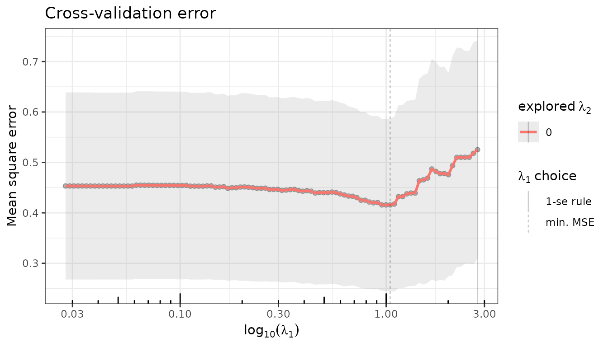
fit_lasso$debias <- FALSE
fit_lasso$plot_path()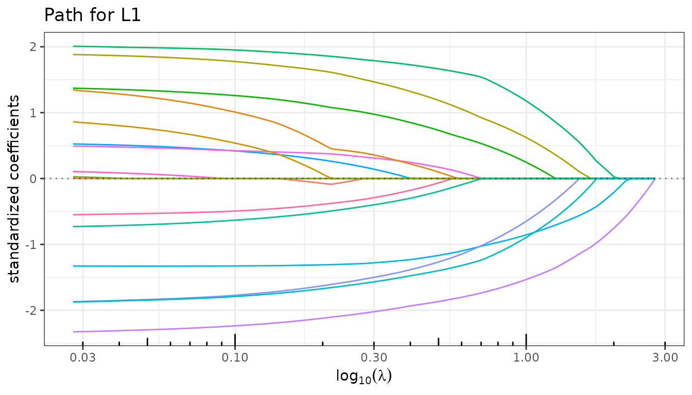
Setting $debias back to FALSE restores the
original regularized coefficients.